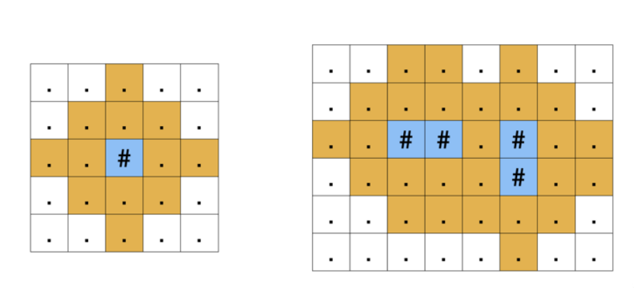

每日一题——沙漠面积
每日一题
DFS, c++, 每日一题
字数统计: 701(字)
阅读时长: 2(分)
题目：
我们获得了一幅陆地和水域情况的卫星照片，照片可以看成是一个 n 行 m 列的矩形，矩形中的每个格子要么是陆地（用半角点号 . 表示），要么是水域（用井号 #表示）。
虽然卫星照片可以清楚的辨别出陆地和水域，但陆地的具体类型却并不明确。现在我们了解到，对于一块是水域的方格，它向上、下、左、右四个方向 k 步之内可达的陆地格子，均会形成沙滩。例如，下图展示了 k=2 的情况，蓝色的格子代表水域，标为黄色的陆地格子是沙滩。

你的任务是根据卫星照片计算出属于“沙滩”格子的数量。注意：卫星照片只拍摄了包含水域的部分，水域附近的沙滩可能出现在卫星照片边界之外。你可以假设卫星照片之外不存在任何水域。
输入
输入的第一行是空格分隔的三个整数 n,m 和
k，代表拍摄的卫星照片共有 n 行 m 列，以及形成沙滩的范围k。
接下来 n 行，每行一个字符串。字符串的长度恰好是m，代表卫星照片的一行，其中：
井号#表示一片水域；
半角点号.表示一片陆地。
输出
输出一行一个整数，代表沙滩格子的数量。
样例输入1
2 4 2
##.#
…#
样例输出1
26
样例输入2
5 10 3
…#
…########
…#
#…###.#
…####…#
样例输出2
103
提示
对于 40% 的数据，满足 n=m=1；
对于 100% 的数据，满足 1≤n,m≤100，1≤k≤10。
题解
1
2
3
4
5
6
7
8
9
10
11
12
13
14
15
16
17
18
19
20
21
22
23
24
25
26
27
28
29
| #include <bits/stdc++.h>
using namespace std;
char a[500][500];
int ans;
int n,m,k;
void dfs(int x, int y, int step)
{
if (a[x][y] != '#') a[x][y] = '?';
if (step == k) return;
dfs(x+1,y,step+1);
dfs(x,y+1,step+1);
dfs(x-1,y,step+1);
dfs(x,y-1,step+1);
}
int main()
{
cin >> n >> m >> k;
for (int i = 1+249; i <= n+249; i++)
for (int j = 1+249; j <= m+249; j++)
cin >> a[i][j];
for (int i = 1+249; i <= n+249; i++)
for (int j = 1+249; j <= m+249; j++)
if (a[i][j] == '#') dfs(i,j,0);
for (int i = 1; i <= 500; i++)
for (int j = 1; j <= 500; j++)
if (a[i][j] == '?') ans++;
cout << ans << endl;
return 0;
}
|